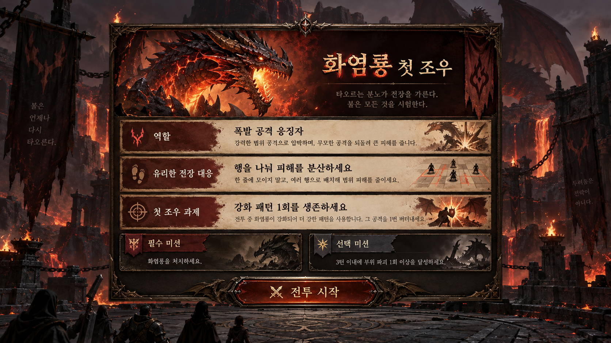

프로젝트: DragonTactics, 문서 버전 1.1, 소스 코드 버전 0.4.0(package.json 기준).
근거 등급: [사실] 소스·테스트·문서 확인, [제안] 미검증 가설.
2026-09-21에는 드래곤·전투·첫 조우 UI 소스와 개선 문서를 직접 대조했다.
전체 Node 테스트는 165/165 통과했다.
2. 문제 정의
[사실] 저장소에 드래곤(js/dragon.js,js/dragons.js), 드래곤 AI(js/dragon-ai.js), 아군 AI(js/ally-ai.js), 카드(js/cards.js) 모듈이 분리되어 존재해, 전술 전투에서 아군 유닛과 드래곤을 함께 다루는 시스템임을 시사.
[제안] 문제: 다수의 모바일 전술 게임은 턴마다 카드/유닛 조합 판단에 드는 인지 부하가 커서 신규 유저 이탈이 발생하는데, DragonTactics는 드래곤이라는 핵심 유닛과 카드 자원을 어떻게 조합해도 직관적으로 이해되는 전투 루프를 아직 검증하지 못함.
[제안] 특히 AI 모듈이 아군(ally-ai.js)과 적 드래곤(dragon-ai.js)으로 분리된 구조가 실제 플레이 난이도 체감과 일치하는지는 미검증.
3. 한 줄 피치와 제품 포지셔닝
[제안] 한 줄 피치: "카드로 아군을 지휘해 거대한 드래�니를 상대하는 턴제 전술 게임."
[제안] 포지셔닝: 캐주얼 카드 배틀러와 정통 SRPG 사이, 드래곤(보스)전 특화 전술 게임으로 포지셔닝.
이 포지셔닝은 js/cards.js와 js/dragon*.js 모듈 분리 구조에서 유추한 것으로, 원본 기획서 문구와 대조되지 않았음(신뢰도: 낮음).
4. 주 페르소나
[제안] 이름: 김도현, 만 29세, 스타트업 백엔드 개발자. 출퇴근 지하철에서 하루 15~20분씩 모바일 전술 게임을 즐긴다.
맥락: 긴 세션에 몰입하기보다 한 판(수 분 내)에 명확한 승패와 성장 보상을 얻고 싶어 하며, 카드 조합을 고민하는 재미를 원하지만 튜토리얼이 길면 바로 이탈한다.
이 페르소나는 저장소 내 문서 본문을 확인하지 못한 상태의 제안이며, 실제 docs/persona_playtest_feedback.md와 다를 수 있음(신뢰도: 낮음).
5. 디자인 기둥과 핵심 재미
[제안] 기둥 1: 카드 기반 자원 관리 — 제한된 카드로 최선의 턴을 설계.
[제안] 기둥 2: 드래곤이라는 비대칭 위협 — 일반 유닛과 다른 규칙으로 움직이는 드래곤 AI(js/dragon-ai.js)와의 대결.
[제안] 기둥 3: 아군 자동 행동(js/ally-ai.js)과 플레이어 카드 개입의 조합 — 전부 수동 조작이 아닌 반자동 전술.
6. 핵심 루프
유저가 선택을 하면 결과가 되고, 그 결과 때문에 다시 선택을 한다.
[제안] 정확한 순환 문장: "카드를 뽑는다 → 카드를 사용해 아군을 지시한다 → 드래곤과 아군이 턴을 진행한다 → 전투 결과에 따라 보상을 획득한다 → 다음 판의 카드를 뽑는다." - 이 루프는 js/engine.js(턴 진행), js/cards.js(카드 사용), js/dragon-ai.js/js/ally-ai.js(자동 행동) 모듈 존재로부터 유추한 제안이며 실제 구현 로직은 확인하지 않음.
7. 최초 30초 플레이 흐름
[제안] 0~5초: 타이틀 화면에서 대전 시작 버튼 노출.
[제안] 5~15초: 초기 카드 손패와 드래곤 등장 연출, 첫 턴 안내.
[제안] 15~30초: 플레이어가 첫 카드를 사용해 아군을 배치/행동시키고 드래곤의 첫 반격을 확인.
이 흐름은 index.html과 js/input.js 존재를 근거로 한 추정이며, 실제 온보딩 텍스트나 튜토리얼 스텝 수는 확인하지 못했다(신뢰도: 낮음).
8. 게임 규칙과 승패 조건
[사실] tests/engine.combat.test.js,tests/engine.movement.test.js,tests/engine.flow.test.js 파일명으로 미루어 전투, 이동, 턴 흐름을 다루는 규칙 엔진이 존재.
[제안] 승리 조건: 상대 드래곤(보스)의 체력을 0으로 만들면 승리, 아군 전멸 또는 제한 턴 초과 시 패배로 추정.
[제안] 구체적 수치(체력값, 턴 제한, 카드 코스트)는 원문서를 열람하지 못해 확인 불가.
9. 콘텐츠, 진행, 성장, 경제 구조
[사실] js/cards.js, js/dragons.js가 별도 모듈로 존재해 카드 목록과 드래곤 목록이 데이터화되어 있을 가능성을 시사.
[제안] 진행 구조: 스테이지별로 드래곤이 교체되며 클리어 시 새 카드 또는 아군 유닛을 해금하는 방식으로 추정.
[제안] 경제 구조(재화, 상점, 강화 비용) 관련 구체 수치는 원문서 미열람으로 확인하지 못함.
10. MVP 가설과 검증 방법
[제안] 가설 1: 카드 3~5장 손패만으로도 플레이어가 매 턴 의미 있는 선택을 한다고 느낀다.
[제안] 가설 2: 드래곤 AI의 예측 가능한 패턴(js/dragon-ai.js)이 위협감과 전략성을 동시에 준다.
[제안] 검증 방법: 소규모 플레이테스트 그룹에게 첫 3판을 플레이하게 하고, 각 턴의 카드 선택 소요 시간과 재도전 의사를 설문으로 수집.
11. 레퍼런스별 핵심 행동 단계 수와 적용 교훈
[제안] 레퍼런스 A(카드형 오토배틀러): 카드 선택 1단계 → 자동 전투 관전 1단계 → 결과 확인 1단계, 총 3단계. 교훈: 관전 구간이 길면 플레이어 개입 체감이 낮아지므로 아군 행동에 대한 간단한 개입 지점을 추가로 고려.
[제안] 레퍼런스 B(보스전 특화 SRPG): 유닛 배치 1단계 → 스킬/카드 사용 1단계 → 보스 반격 확인 1단계 → 다음 턴 준비 1단계, 총 4단계. 교훈: 보스 반격 연출을 명확히 분리해야 플레이어가 자신의 실수와 보스 패턴을 구분해서 학습한다.
두 레퍼런스는 저장소 문서에서 직접 인용한 것이 아니라 유사 장르 패턴에 대한 일반적 추정이며, 사내 레퍼런스 문서(docs/superpowers/specs/2026-04-21-dragon-tactics-design.md)의 실제 내용과 다를 수 있다.
12. 수치 KPI와 측정 방법
[제안] KPI 1: 첫 3판 완료율 70% 이상 — 튜토리얼 이탈 로그(세션 시작~3판 완료 이벤트)로 측정.
[제안] KPI 2: 평균 턴당 카드 사용 결정 시간 5초 이하 — 클라이언트 입력 타임스탬프(카드 노출 시각과 사용 시각 차이)로 측정.
[제안] KPI 3: 재도전율(패배 후 즉시 재시작 비율) 50% 이상 — 패배 화면 노출 후 다음 세션 시작까지 시간 및 재시작 버튼 클릭 로그로 측정.
위 수치는 실측 데이터가 아닌 검증 목표(제안)이며, 실제 계측 로그나 분석 도구 존재 여부는 확인하지 못했다.
13. UI, HUD, 컨트롤
[사실] js/input.js 파일이 존재해 입력 처리 로직이 별도 모듈로 분리되어 있음.
[제안] 5가지 UI 상태: (1) 로딩 상태 — 에셋 준비 중 스피너, (2) 대기/카드 선택 상태 — 손패와 아군 배치 UI 노출, (3) 진행/애니메이션 상태 — 카드 사용 및 드래곤 반격 연출 중 입력 잠금, (4) 결과 상태 — 승리/패배 요약과 보상 표시, (5) 오류/재연결 상태 — 네트워크 또는 로드 실패 시 재시도 버튼 노출.
각 상태의 정확한 레이아웃과 텍스트는 index.html/css/styles.css 본문을 열람하지 못해 확인되지 않음(신뢰도: 낮음).
드래곤 첫 조우 브리핑 — 2026-09-21 구현

실제 플레이 캡처가 아닌 목표 상태 이미지
매치 시작 패널 상단에 드래곤 정체성과 역할·전장 대응·전술 과제를 표시한다.
기존 메달리온, 미션 카드와 패널 프레임을 재사용한다.
5종 한국어 브리핑 데이터와 드래곤별 저장 상태를 사용한다.
첫 조우·재조우·긴 설명·좁은 화면을 구분하고 560px 이하에서 한 열로 적층한다.
전술 영역에 aria-label을 제공한다.
14. 로딩·빈 상태·에러·100개 이상 데이터·3배 긴 텍스트 대응
[제안] 로딩: 카드/드래곤 데이터 로드 중 최소 스피너 또는 진행 표시가 필요하나 실제 구현 여부는 코드 본문 미열람으로 확인 못함.
[제안] 빈 상태: 손패가 비었을 때 '카드 없음' 안내와 턴 종료 버튼만 노출되는 처리가 필요하다고 제안.
[제안] 데이터 100개 이상(카드/드래곤 목록이 많아질 경우) 및 3배 긴 텍스트(긴 카드 설명, 다국어 이름) 대응을 위한 리스트 가상화나 말줄임 처리는 현재 코드에서 확인되지 않아 향후 검증이 필요한 항목으로만 표기.